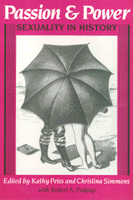

<body bgcolor="#FFFFFF" text="#000000" link="#0000FF" vlink="#CC0000" alink="#CC0000"><center><hr width="350" size="1" align="center" noshade>Innovative writings on the history of sexuality<hr width="350" size="1" align="center" noshade><p><a href="https://cdcshoppingcart.uchicago.edu/Cart/ChicagoBook.aspx?ISBN=9780877225966&&PRESS=temple" target="_top">Buy this book!</a> | <a href="https://cdcshoppingcart.uchicago.edu/Cart/Cart.aspx?PRESS=temple" target="_top">View Cart</a> | <a href="https://cdcshoppingcart.uchicago.edu/Cart/Cart.aspx?PRESS=temple" target="_top">Check Out</a></p><p></p></center><!--none//--><h1>Passion and Power</h1>
<H2>Sexuality in History</H2>
<H2>A Radical History Review Book</H2>
<h3>edited by Kathy Peiss and Christina Simmons with Robert A. Padgug </h3>
<P>cloth 0-87722-596-6 $39.95, May 89, <FONT COLOR=#990033>Out of Print</FONT>
<br>paper 0-87722-637-7 $33.95, Mar 89, <FONT COLOR=#990033>Available</FONT>
<BR> 328 pp
6x9
32&nbsp;figures
</P><BLOCKQUOTE><I>"Brings together some of the most recent and innovative writing on the history of sexuality and explores the experiences, ideas and conflicts that have shaped the emergence of modern sexual identities."</I>
<br>&#151<b><I>Dare</I></b><I></I></BLOCKQUOTE>
<p><I>Passion and Power</I> brings together some of the most recent and innovative writings on the history of sexuality and explores the experiences, ideas, and conflicts that have shaped the emergence of modern sexual identities. Arguing that sexuality is not an unchanging biological reality or a universal natural force, the essays in this volume discuss sexuality as an integral part of the history of human experience. Articles on sexual assault, homosexuality, birth control, venereal disease, sexual repression, pornography, and the AIDS epidemic examine the ways that sexuality has become a core element of modern social identity in the nineteenth- and twentieth-century United States.
<p>It is only in recent years that historians have begun to examine the social construction of sexuality. This is the first anthology that addresses this issue from a radical historical perspective, examining sexuality as a field of contention in itself and as part of other struggles rooted in divisions of gender, class, and race.
<BR>&nbsp;<h2>Contents</h2><P>
<p><b>Part I: Sexuality and Historical Meaning</b>
<br>1. Passion and Power: An Introdtion &#150 Kathy Peiss and Christina Simmons
<br>2. Sexual Matters: On Conceptualizing Sexuality in History &#150 Robert A. Padgug
<p><b>Part II: The Emergence of Modern Sexuality, 1790 to 1930</b>
<br>3. "The Life of a Citizen in the Hands of a Woman": Sexual Assault in New York City, 1790 to 1820 &#150 Marybeth Hamilton Arnold
<br>4. "Charity Girls" and City Pleasurer: Historical Notes on Working Class Sexuality, 1880-1920 &#150 Kathy Peiss
<br>5. Movements of Affirmation: Sexual Meanings and Homosexual Identities &#150 Jeffrey Weeks
<br>6. From Sexual Inversion to Homosexuality: The Changing Medical Conceptualization of Female "Deviance" &#150 George Chauncey, Jr.
<br>7. "We Were a Little Band of Willful Women": The Heterodoxy Club of Greenwich Village &#150 Judith Schwartz, Kathy Peiss, and Christina Simmons
<br>8. The Black Community and the Birth Control Movement &#150 Jessie M. Rodrique
<p><b>Part III: Sexual Conflicts and Cultural Authority, 1920 to 1960</b>
<br>9. Modern Sexuality and the Myrh of Victorian Repression &#150 Christina Simmons
<br>10. Venereal Disease: The Wages of Sin? &#150 Elizabeth Fee
<br>11. "Uncontrolled Desires": The Response to the Sexual Psychopath, 1920-1960 &#150 Estelle B. Freedman
<br>12. The Homosexual Menace: The Politics of Sexuality in Cold War America &#150 John D�Emilio
<br>13. The Reproduction of Butch-Fern Roles: A Social Constructionist Approach &#150 Elizabeth Lapovsky Kennedy and Madeline Davis
<p><b>Part IV: Private Passions and Public Debate, 1960 to the Present</b>
<br>14. Mass Market Romance: Pornography for Women Is Different &#150 Ann Barr Snitow
<br>15. (De)Constructing Pornography: Feminisms in Conflict &#150 Duphne Read
<br>16. Gay Villain, Gay Hero: Homosexuality and the Social Construction of AIDS &#150 Robert A. Padgug
</P><BR>&nbsp;<H2>About the Author(s)</H2>
<P><b>Kathy Peiss</b> is Associate Professor of History and Women�s Studies at the University of Massachusetts at Amherst and author of <I><a href="358_reg.html" target="_top">Cheap Amusements: Working Women and Leisure in Turn-of-the-century New York</a></I> (Temple).</P>
<P><b>Christina Simmons</b> is Assistant Professor of History at the University of Cincinnati-Raymond Walters College.</P>
<BR><H2>Subject Categories</H2>
<p><A HREF="/tempress/history.html" TARGET="_top">History</a>
<BR><A HREF="/tempress/sexual.html" TARGET="_top">Sexuality Studies/Sexual Identity</a>
</p>
<BR><h2 class="inpageheading">In the series</H2>
<P><I><a href="http://www.temple.edu/tempress/critical.html" onMouseOver="window.status='Click for other books in this series!'; return true;" onMouseOut="window.status=''; return true;" target="_top">Critical Perspectives on the Past</a></i>, edited by <a href="http://www.temple.edu/tempress/authors/benson_memoriam.html" target="_top">Susan Porter Benson</a>, Stephen Brier, and Roy Rosenzweig.
</p><p><i>Critical Perspectives on the Past</i>, edited by Susan Porter Benson, Stephen Brier, and Roy Rosenzweig, is concerned with the traditional and nontraditional ways in which historical ideas are formed. In its attentiveness to issues of race, class, and gender and to the role of human agency in shaping events, the series is as critical of traditional historical method as content. Emphasizing that history is itself an interpretation of material events, the series demonstrates that the historian's choices of subject, narrative technique, and documentation are politically as well as intellectually constructed.</p>
<p align="center"><a href="https://cdcshoppingcart.uchicago.edu/Cart/ChicagoBook.aspx?ISBN=9780877225966&&PRESS=temple" target="_top">Buy this book!</a> | <a href="https://cdcshoppingcart.uchicago.edu/Cart/Cart.aspx?PRESS=temple" target="_top">View Cart</a> | <a href="https://cdcshoppingcart.uchicago.edu/Cart/Cart.aspx?PRESS=temple" target="_top">Check Out</a></p><p><font face="Arial" size="1"><a href="copyright.html" onMouseOver="window.status='Web Copyright Policy';return true;" onMouseOut="window.status=''" title="Web Copyright Policy">&copy;</a> 2015 <a href="http://www.temple.edu" target="new" onMouseOver="window.status='Link to Temple University home page';return true;" onMouseOut="window.status=''" title="Link to Temple University home page">Temple University</a>. All Rights Reserved. http://www.temple.edu/tempress/titles/494_reg.html</font></p>